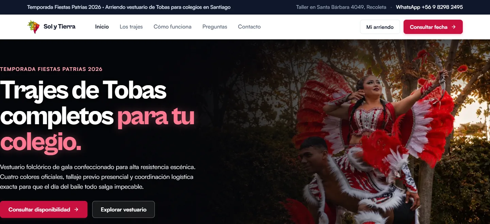

Ordenar la experiencia de arriendo y la gestión diaria
La demanda ya estaba. Analicé la operación y encontré fricciones en la coordinación de entregas, tallas y cobros. Diseñé una consulta guiada y una interfaz diaria para apoyar el trabajo del equipo.
VER LA EXPERIENCIA ↓La fricción aparecía en entregas, tallas y cobros
Analicé los datos de temporada: 43 de 54 entregas al 18 de agosto ocurrían el día previo (28 durante la noche), y 539 de 1.454 alumnos tenían tallas distintas para chaqueta y faldón. Además, las garantías figuraban como pago.
La consulta debía orientar al colegio y validar disponibilidad; el panel debía ordenar las tareas que el equipo resuelve cada día.
Diseñar la consulta del colegio y el trabajo del equipo
Diseñé un recorrido de consulta en cinco pasos con validación de disponibilidad y una interfaz de gestión en cuatro vistas: Hoy, Preparar, Comprometer y Cobrar.
Vestuario, colecciones y condiciones para entender qué se arrienda.
Cinco pasos para indicar fecha, cantidades y tallas; disponibilidad validada.
Cuatro vistas para organizar preparación, compromiso, cobro y entrega de documentos.
De la consulta guiada al seguimiento del servicio
El sitio presenta el vestuario y guía la consulta. El panel ordena la gestión diaria y aparece en las grabaciones con datos de demostración.
Sitio público con consulta guiada en cinco pasos y validación de disponibilidad. Grabación del 25 de octubre de 2026.
Una portada con el carmesí de la marca
La propuesta local actualiza el color y la jerarquía visual del sitio. La vista está pendiente de publicación.

Priorizar la fricción del servicio y diseñar la respuesta
Analicé los datos de temporada y detecté que la fricción estaba en la coordinación de entregas, tallas y cobros. Diseñé el recorrido de consulta para los colegios y la interfaz diaria de trabajo del equipo. Al cierre de la temporada: más de 80 arriendos en 74 colegios y 93 documentos generados automáticamente.
Las grabaciones utilizan datos ficticios y muestran la interfaz. No atribuyen reducciones de errores ni de tiempos.